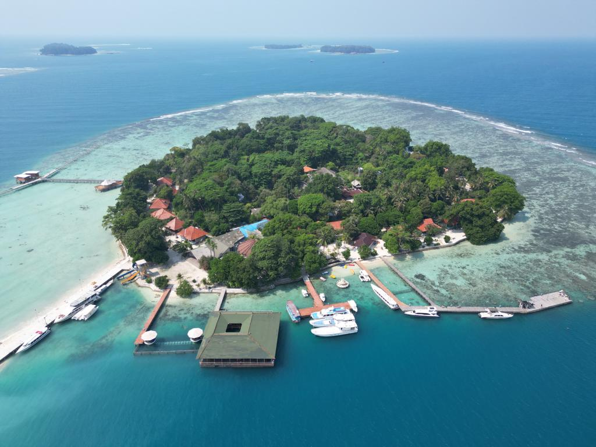

Nikmatilah Liburan Anda dengan rekomandasi bertikut ini

Bali
Bali, dikenal juga sebagai Pulau Dewata adalah sebuah provinsi di Indonesia yang terletak pada bagian barat Kepulauan Nusa Tenggara dengan ibu kota di Kota Denpasar
40,000 views | 2,000 coments

Pulau Seribu
Kabupaten Administrasi Kepulauan Seribu atau yang sering di sebut juga Kepulauan Seribu adalah sebuah kabupaten administrasi di Daerah Khusus Ibukota Jakarta, Indonesia. Wilayahnya meliputi gugusan kepulauan di Teluk Jakarta.
30,000 views | 1,400 coments

Raja Ampat
Kepulauan Raja Ampat adalah gugusan kepulauan yang berlokasi di barat bagian Semenanjung Kepala Burung Pulau Papua. Secara administrasi, gugusan ini berada di bawah Kabupaten Raja Ampat dan Kota Sorong, Provinsi Papua Barat Daya.
100,000 views | 30,000 coments